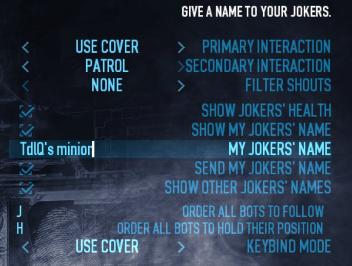

This mod lets you issue various types of order to your AI teammates, including jokers.
Features
- Add new behaviours to all friendly AI (see details below).
- Enhance path of all bots so they get to you faster.
- Fix all pathing issues of jokers so they never get stuck or despawned.
- Support for GoonMod's Custom Waypoints (see more below).
Using GoonMod's Custom Waypoints
To assign precise positions: place a mark, shout at a bot, and he'll go where the mark is.
Behaviours
They are identified by an icon on the left of a character's name.
1/ Stationary
Bots won't move at all, even if under heavy fire, and take back their position if pushed back.
2/ Use cover
Bots will keep their position but if they take too much damage, they'll withdraw for a moment and go back once their health has regenerated. So a bot placed near a good cover can hold his position for a long time, place 2 of them and no one will pass.
3/ Patrol
Bots will go from a random cover to another in the navigation segment they're assigned to. Size of navsegs can vary greatly (usually between 5 and 30 meters).
4/ Interact with objects
This feature is limited to actions that don't require equipment. It relies heavily on custom waypoints, taking a good look at GCW's options is advised (specifically how to use previous/next waypoint controls).
Will a bot stay where he's interacted? That depends.
If the object is still interactable once bot's job is completed (like a drill): yes.
If you let the waypoint used to give the order til a few seconds after the end of bot's interaction: yes.
In all the other cases: no, he'll return to you.
5/ Assist revive operations
If a character is downed less than 20 meters away, all fixed bots in range will put their current task on hold and come to help clear the place. Then they'll go back to whatever they were doing.
6/ Retrieve stolen bags
Bots can be ordered to hunt a cop who has stolen a loot bag and get it back. This makes good use of Monkeepers when multiple bags are involved.
Options
You can give a name to your jokers, so identifying your jokers from other players' jokers will be easy.
Filter shouts influence only primary interaction, ie the "shout/interact" control. Setting it to "all" can be handy if you spam that control to mark cops: you won't mess with bots' assignments.
